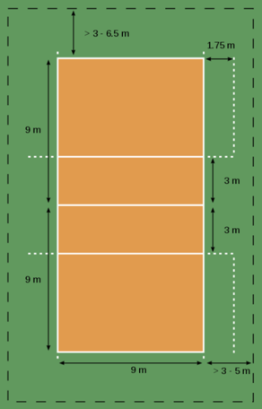
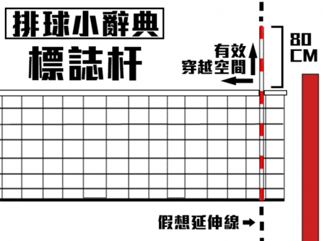

規則
違例與犯規
a.連擊：單人連續擊球兩次以上（除第一接傳、或攔網時接觸身體多個部位、或攔網後接一傳）b.4次擊球：一方隊伍擊球四次（含）以上（攔網觸球不算在內）
c.持球：球停留於手中
d.過網擊球：對方球員未完成攻擊性擊球前或同時，於對方空間觸球
e.位置錯誤：位置錯誤或輪轉錯誤（發球員）
f.觸網：只要碰觸網子即算觸網
g.後排違例：後排不能攔網。
得分
排球比賽採取五局三勝制，先取三局勝利就是獲勝。首四局為二十五分制，第五局十五分制，每局都是落地得分制。兩隊 二十四分平手（第五局十四分平手）後就行局末平分制，直至其中一隊連勝兩分，方可贏得一局。 發球方發球時，只要通過2根標誌桿間，飛過網進入對方球區，無論球是否觸網在先，都算成功，比賽繼續進行。 排球壓線可算作得分。排球任意部分只要落於場內或線上都算得分。
場地
1.場地：
包含比賽場區（playing court）和無障礙區（free zone）。比賽場區由兩條18 公尺的邊線及兩條9公尺的端線所圍成，中線則將球場分割成兩塊9公尺×9公尺 的區域，距中線3公尺處有一條劃分前區和後區的線，稱為攻擊線（attack line ）。球場各界線寬5公分，包含在比賽場區內。比賽場區外至少須有3公尺寬的 無障礙區，上空無障礙空間至少須有7公尺。
2.球網與標誌竿：

球網寬1公尺、長9.5~10公尺（標誌帶外各25~50公分），網面方形網洞為10 公分×10公分。球網上沿須包覆寬7公分的白色帆布帶。 男網高度:2.43公尺 女網高度:2.24公尺 標誌竿是具有彈性的竿子，長度1.8公尺 ，直徑10公厘，每10公分塗以對比顏 色，紅白相間為佳。標誌竿繫於兩側標誌帶外緣各一支，上部高於網頂80公分 ，其被視為球網的一部份，為兩端有效穿越空間的界限。
3.網柱：
兩側網柱為平滑圓柱，須固定於球場地面，高度2.55公尺，距邊線1公尺。
大砲(主攻)*2
主攻手是在靠近標誌杆的位置進攻的球員（通常在4號位和2號位）。由於大多數傳向主攻位置的球都是高球，因此主攻手往往採用很長的助跑，有時甚至從邊線外開始助跑。在進攻中主攻手通常依靠強力扣殺得分，但有時也要求以斜線助跑和快攻來擾亂對方的防守。主攻手還需要掌握一傳技術，因為在對方發球時他們通常作為自由球員以外的第二一傳點。慣用右手的主攻手最適合在4號位（前排左側）進攻，相對的，慣用左手的主攻手最適合在2號位（前排右側）進攻。主攻手個人的技巧和突破的能力相當重要，也是球隊主要氣勢的帶動者。在接發球的攻擊時，主要是由舉球員來配球，而在來回的過程當中，主攻手的積極，爆發力，持續力就相當重要了，主攻手對於處理球的能力也要有相當的穩定度。
攔中*2
攔中是經常在靠近舉球員的位置打出快攻的球員。過去副攻手專職攔網，要很清楚知道對方進攻的組織路線，並且需要從中間向兩邊快速移動以組織雙人攔網。攔中為場上的重要攻擊手之一，也是牽扯對方對攔網布局的重要一環。攔中進攻以快攻為主，同時，在前排也要負責移動攔網以便給對方的進攻造成壓力。通常副攻手是隊中最高的球員，後排時被自由球員換下且不要求有很好的防守技術。攔中的穩定發揮會具有很大的牽制力，可以讓舉球員的配球有更多的可能性，攔中的掩護也會讓主攻手以及副攻(舉對)的攻擊成功率提高。
副攻(舉對)*1
與舉球打對角。副攻(舉對)原本的主要用處是當舉球員位置不佳無法傳球時擔任二傳任務。但是，在現代排球戰術中，副攻(舉對)已經發展成為一個隊的進攻點，通常在前排站在舉球員的右邊（二號位，後排一號位），扣舉球員的背傳球。
舉球*1
舉球員可說是球場上的教練，舉球員的冷靜與處理能力往往決定一場球賽的勝負，進攻的節奏幾乎多由舉球員來掌握。職責在於組織全隊的進攻，他們負責在舉球時將球送至讓攻手最適宜扣球的位置。舉球員必須有能力和扣球隊員組合出多種變化以破壞對方的防守，並且能夠欺騙對方的攔網隊員。移動快速、傳球精準是一個舉球員的必備素質。一位好的舉球員可串起全隊的攻勢，並且必須相當了解隊上各攻擊手的特性與習慣，在比賽中更要保持清楚的頭腦與思維。另外，在某些時候舉球員也必須扮演攻擊手角色，比如二次吊球或扣球，吊後場等經常因為出其不意而得分。所以除了練習舉球技巧外，舉球員也必須具備些許長球攻擊和吊球的能力，以便變換攻擊的節奏，也可以讓對方防守上有更大的壓力，一旦對方注意力不集中或是體力下滑，往往會有出其不意的得分效果。
自由球員*1
自由球員是專職防守的球員，負責接扣球和接發球防守的部分（救球）。通常自由球員具有全隊最快和反應速度最好的一傳技術（但也會因此在後排少了一個攻擊手，減少攻擊上的路徑變化）。由於自由球員不需要在網前進攻或防守，可以由一傳技術好且反應快速的矮個子球員勝任。在比賽被指定為自由球員的球員不可以擔任其他位置。自由球員的替換次數是不受限制的，但兩次的替換之間必須隔一次死球，而且只能由被替換下場者做輪替（或第二位自由球員）。替換的時間必須在裁判吹哨示意發球前做更換。每一局開始前，自由球員不得先進場，必須等第二裁判核對先發球員後才可替換進場。
球路

2號:舉球員前方，球的上升距離長，球落下時才打
3號:一般大砲都在這，因為會有足夠的時間準備以及足夠的空間起跳，球很長很高
6號:跟3號落點一樣，只是高度比3號更高
7號:舉球員前方平飛球，高度比3號稍低
8號:舉球員前方大約3號一半的位置，高度跟3號一樣
A式快攻:舉球員前方一步處，球上升距離短，在球上升的時候就攻擊
B式快攻:舉球員前方二~三步處，高度跟打點和A式快攻一樣
C式快攻:舉球員背後版的A式快攻
D式快攻:舉球員背後版的B式快攻
背2:舉球員後方，跟2號一樣
背長:舉球員後方，跟6號一樣
後排: 球位置在離網一米五的位置，高度可高可低，約二號的高度最佳
發球
1.強發2.跳飄
歡迎光臨MY縫?----攔網
攔網的動作要領：
1.在攔網的定位上，一般我們會先觀察攻擊手的慣用手是哪邊，我們先以常見的右撇子為例。當對方大砲是右撇子時，攔網的定位應該以我們的「左手手 掌」對「對方右手手掌」。在這樣的情況下，對方若要打斜線就會被我們的左手攔住，而要轉直線時，我們的右手也會在球的路徑上。而在攔副攻位的定 位上，便是將「我們的右手」對「攻擊手的右手」。反之，對方若是左撇子的攻擊手，那麼我們就應該要把「我們的右手」對齊「對方的左手」，這樣就 能將對方斜線與直線的路經都包圍住，達到較好的攔網效果。而若是攔對方副攻位置的定位的情況，那就是「左手對左手」囉！2手要盡量貼在耳朵旁邊，這樣就能自然的將手肘伸直。兩腳打開與肩同寬，腳跟提起準備隨時移動位置，膝蓋微彎，眼睛注視對 方的狀況。
3.注意對方舉球員的動作，當球舉出時，迅速移位至球將落下的位置，身體正向著球網準備攔網。
4.轉移位置移動的衝力而垂直躍起，雙手緊靠身體上舉，手臂在不觸網的情況下應盡量伸直越過對方，眼睛注視 球，兩手掌及手指盡量張大，兩手掌的距離以球通不過的情況下增加攔網的範圍。
5.兩手攔網觸球瞬間，應將手臂用力伸直，同時屈膝擊球。
6.為防止攔到球後，球跑到界外，所以在靠近邊緣的那隻手掌應轉向場內方向。
7.攔網後應隨著球的去向準備下一個動作，過程中應將視線儘量跟著球走。


Cover(補防)
球在經過觸擊攔網者身體後，容易形成無法準確預測的球路，或是球夾在攔網者身體與球網之間一起落下，所以需要一位球員至網前進行補防。
術語
01. 三角/三角球:舉球將球舉得太開網 送到了攻擊手後方02. 老大老二老三:指後排攻擊的位置。
老大:後排左 老二:後排中老三:後排右
03. 接噴:接球者沒有準確的控制送球的方向使得球往意外方向飛去
04. 打噴:攻擊手球沒包到而打了個界外
05. 冰/冰起來:不讓隊友碰球
06. 打點:打點就是打擊對方的程度差的人
07. 對牆:拿球對牆練習或是找手感
08. 定:很重很銳的攻擊球 ex:定三米，把球打在三米線上
09. 飄喔:不管是發球或攻擊，只要球很飄就會喊飄喔，通常是指飄浮球
10. 動脈殺球:沒用手掌包到球，而用手腕的地方攻擊
11. 太陽球:把球打很高使得球受到陽光或燈光剌眼影響而變難接，泛指飛很高的球
12. 人妖網:高度介於男排網與女排網之間
13. 買單:比賽差一分就勝利時做球給一個指定的攻擊手，就像交給他負責買單
14. ace:發球直接落地得分，對手自己不小心接噴的不算
15. play one:下一隊上場play的隊伍，也就是目前正在算分的隊伍
16. no mind:別在意
17. ball in:比賽中有球滾入場內，比賽中斷
18. last(拉斯都):最後一分
19. deuce:分數為24:24等情況必須某隊超前對隊兩分才贏得比賽
20. deuce one:分數為24:25或25:26等差一分就結束比賽的情況
21. over:比賽結束
22. campfire(營火):球在人群之中落下沒人要救，就像圍圈注視著營火
23. [大day](貼底):被攔網攔死且很貼網直落地面
24. [ㄑ一ㄨˋ vway](手尾):攻擊點夠高，球從攔網手上方通過落在場內 ex:跳太矮被手尾
25. [猴拱](給他打):意思是說對方殺球沒有威脅性,給他打,不要攔網
26. [嗆死](chance):沒有攻擊性的機會球，可以好好組織一波攻擊
27. [八股]:back-2號位攻擊，八股就是背後，八股ㄉㄥˊ就是背後長攻
28. [kui幫](開網):離網較遠的球
29. [ko幫]:封網
30. [ko喜]:攔網攔死
31. touch/touch out:打手出界，攔網者手有部分碰到了球使攻擊方得分
32. [吞ㄌㄨㄟˇ](吞下去):球從攔網者面前垂直落下，誰都救不到
33. [喀把](cover):補位
34. [岔手/ㄘㄟˋ ㄑ一ㄨˋ ]:攻擊手只有手指扣到，球會軟軟的漂出去
35. 撒西米:對方送過來的嗆死球高又近網，前排球員直接跳扣得分
36. 甜:很容易攻擊得分的球稱為很甜
37. [吊ㄍㄠˊ](吊猴):攻擊手太早起跳而在空中等不到球像猴子吊在樹上
38. [ㄉ一ㄨˋ ㄍㄧㄣ]:抽筋
39.罩啦:攔網攔到球，用來激勵我方士氣
Lucas Saatkamp--巴西
Maxwell Holt--美國
石川祐希(Yuki Ishikawa)--日本
Wilfredo Leon--波蘭
西田有志(Yuji Nishida)--日本
Micah Christenson--美國

 >
> >
>